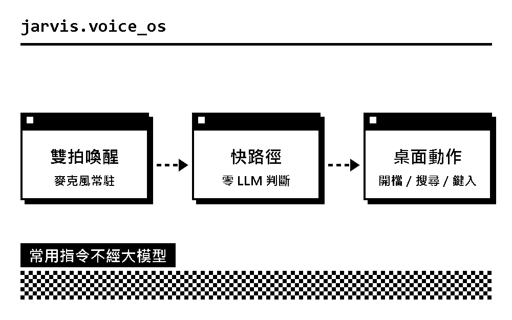
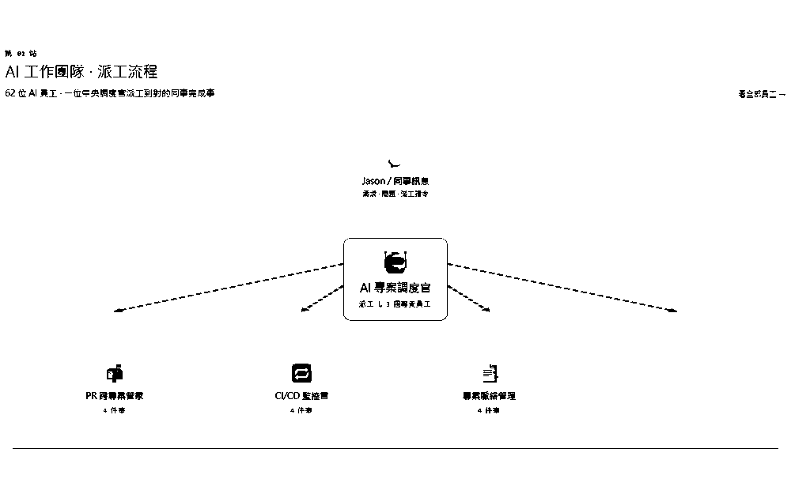
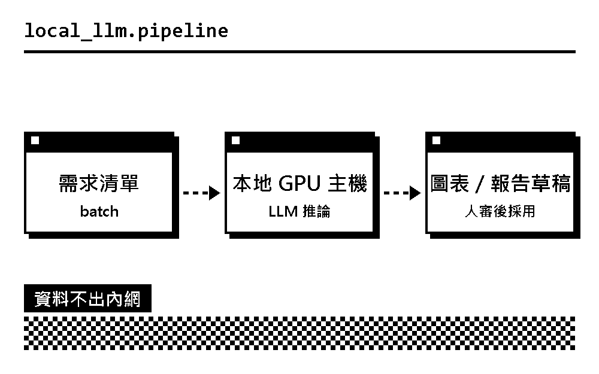
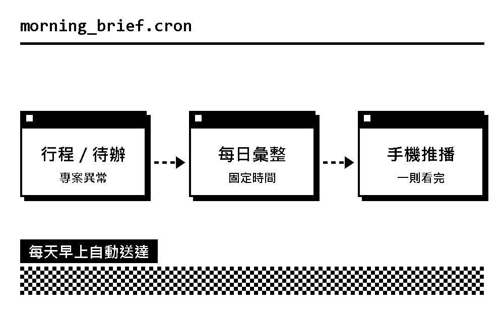
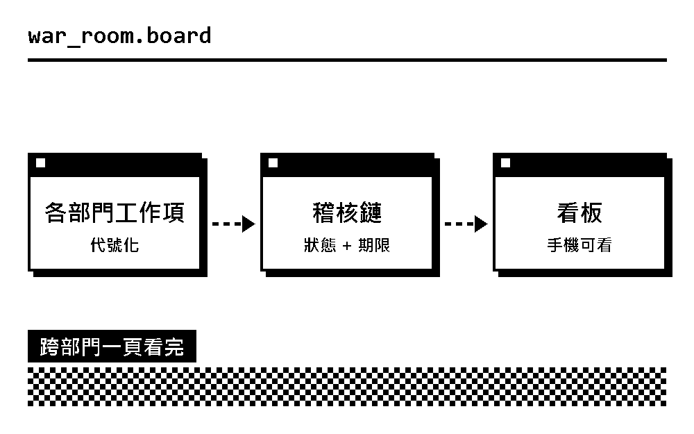
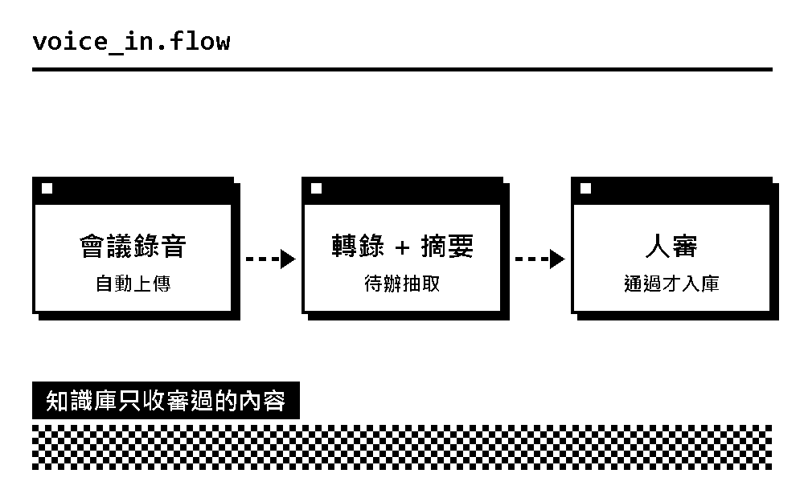

Jarvis 語音 OS
雙拍喚醒、零 LLM 快路徑，能開檔、搜尋、鍵入的桌面語音助理。
8 個階段交付
Jason Lin · 林佳賢
我設計並維運 24 小時運作的 AI agent：語音助理、第二大腦、本地大模型與自動化報表。這裡收錄我做過的系統，以及正在進行的實驗。
SELECTED WORK · 2026
每一項都在實際運作。公司內部系統以代號與示意圖呈現，各項目的詳細介紹陸續補上。

雙拍喚醒、零 LLM 快路徑，能開檔、搜尋、鍵入的桌面語音助理。
8 個階段交付

跨專案事實源與儀表板：會議、日誌、專案狀態自動匯流成一頁。
53 個專案

在本地 GPU 主機上跑大模型，批次起草圖表與報告，資料不出內網。
42 tok/s

每天早上自動整理行程、待辦、專案異常，推到手機。
平日 08:30 送達

跨部門工作項與稽核鏈集中在一個看板，手機也能看。
手機 7 區塊看板

會議錄音轉成摘要與待辦，人審過才寫進知識庫。
131 份錄音入庫
ABOUT
我是林佳賢（Jason Lin），在製造業做經營企劃，也自己動手把 AI 接進每天的工作裡。我在意的不是展示，而是系統能不能每天穩定地跑。
登入自啟、生命週期看板，讓背景 agent 的健康狀態一眼可見。
STT、TTS、HUD 到行動能力，八個階段全數交付。
Discord、錄音、筆記三個入口，自動匯進同一個知識庫。
決定把作品與思考集中在一個屬於自己的地方。
CONTACT
想聊 AI 導入、內訓分享或合作，歡迎來信，或透過 LinkedIn、LINE 聯絡。